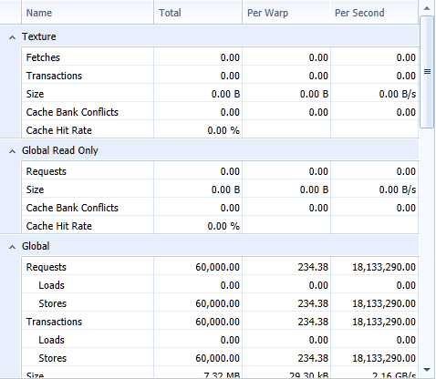

Nsight 提供了一系列实验，聚焦于 kernel 执行期间内存子系统的使用情况。每个独立实验覆盖 CUDA 编程模型所定义的内存层次结构中的某一特定区域：
这些内存实验可以彼此独立地采集；为避免不必要的 Profile 开销，应跳过那些覆盖 kernel 未使用的内存层次区域的实验。对于每个已执行的实验，都会在报告页面上生成一个单独的输出标签页；此外，内存实验的结果还会作为输入提供给概述（Overview）标签页。该概述以高层次的性能指标提供完整内存层次结构的汇总。本文档其余部分将更详细地描述概述标签页；如需了解某个具体内存实验的更多信息，请按上方链接进入。
表格 列出每个被覆盖的内存空间的关键性能指标。以原始数值形式重复展示图表中显示的所有信息；此外还提供一些额外指标，例如每个内存空间的重放开销。重放开销的定义为： (Transactions - Requests) / Instruction_Issued 请求数等于已执行的内存指令数。根据内存访问模式以及所访问的内存空间，单个请求可能需要多个事务才能完成对一个 warp 中所有活跃线程的请求。每多一次内存事务，都会迫使该内存指令重新发射。所需事务越多，指令需要重放的次数也越多；最终阻碍快速向前推进。详情参见指令统计实验。 列Total（总计） 以整个 kernel 执行过程的总聚合值形式报告各项数值。 Per Warp（每 warp） 以每个 warp 为单位报告适用的指标。便于快速与 kernel 开发期间得出的估算值进行比较。 Per Second（每秒） 以与 kernel 执行时长相关的方式报告适用的指标。对于表示传输字节数的行，该列数值即为实际达到的内存吞吐量。目标设备到设备内存的架构峰值内存带宽可在 GPU 设备报告页查看。 |
NVIDIA GameWorks Documentation Rev. 1.0.150630 ©2015. NVIDIA Corporation. All Rights Reserved.